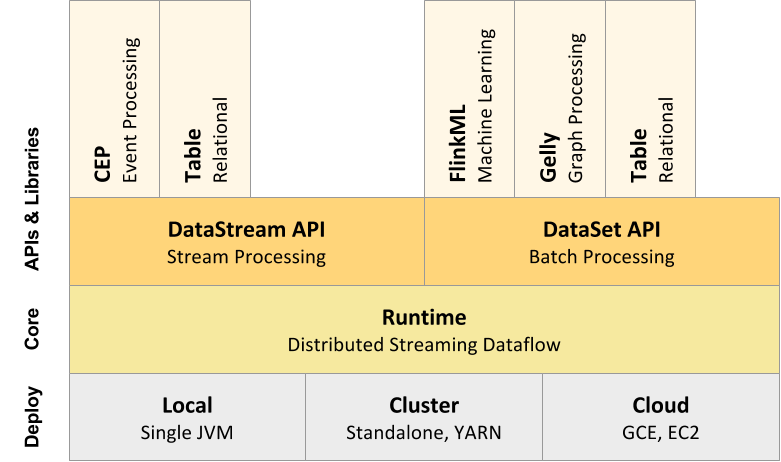
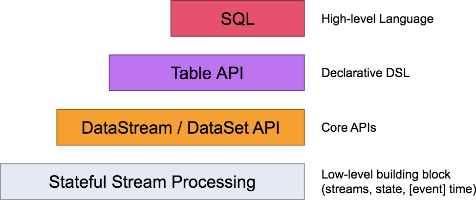
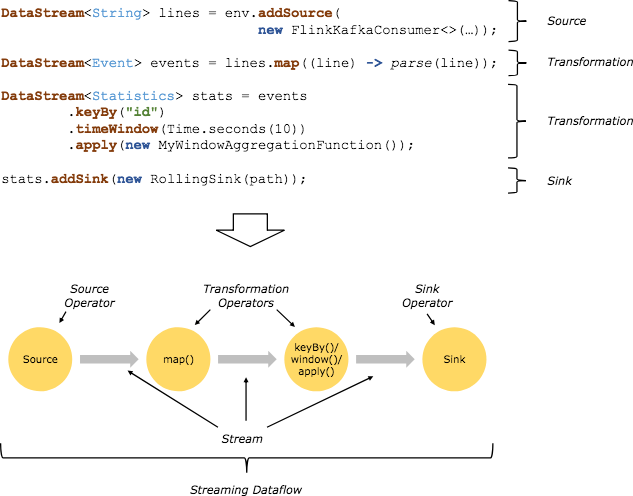
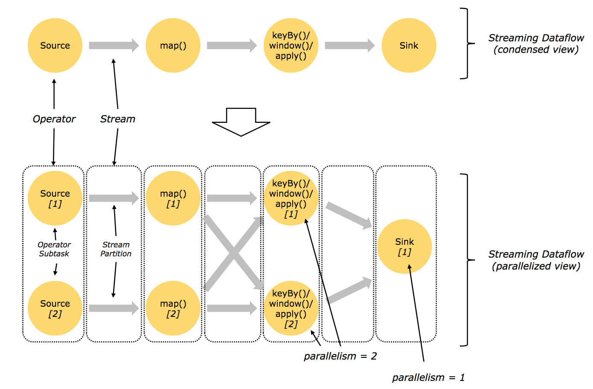
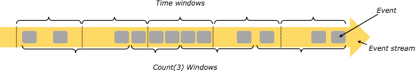
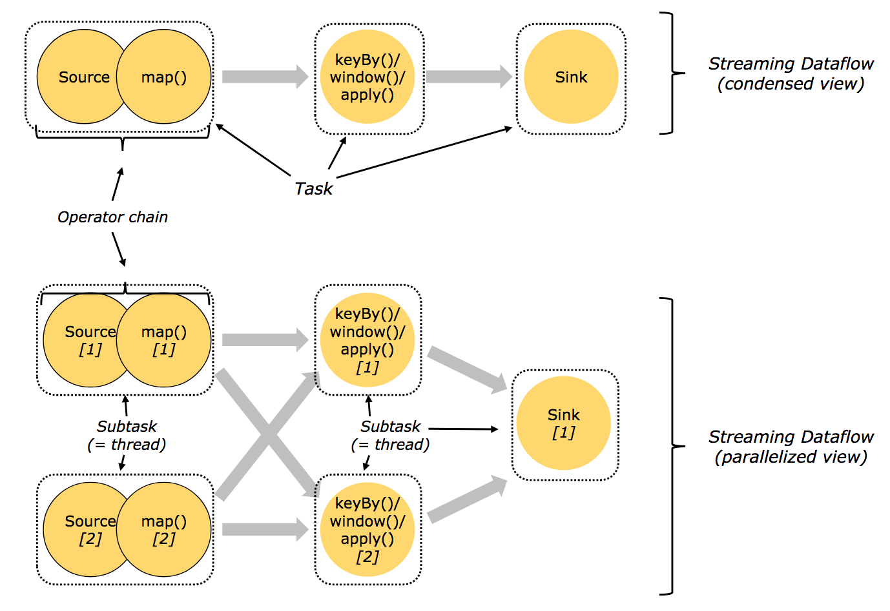
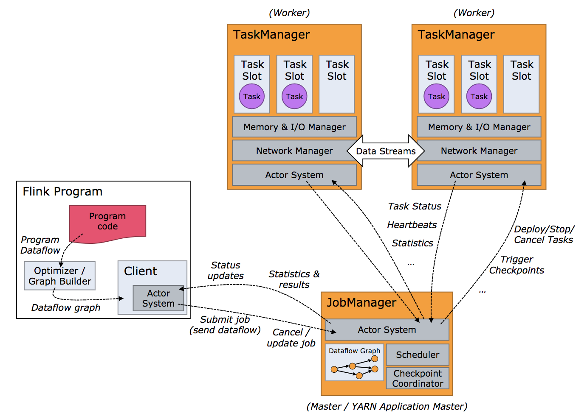
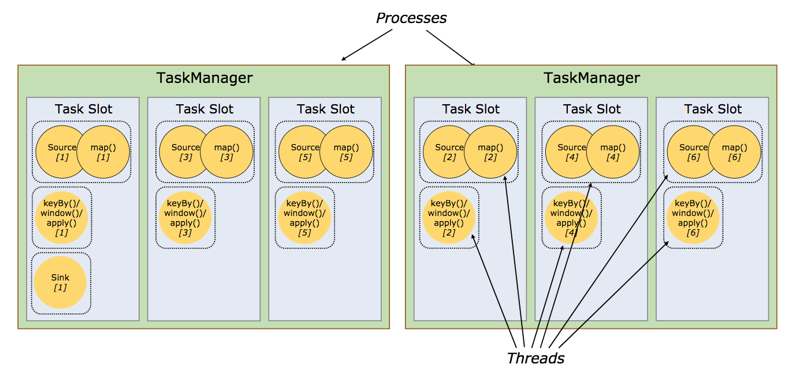

Flink概述与源码研读准备
[TOC]
一、前言
Apache Flink作为一款高吞吐量、低延迟的针对流数据和批数据的分布式实时处理引擎，是当前实时处理领域的一颗炙手可热的新星。关于Flink与其它主流实时大数据处理引擎Storm、Spark Streaming的不同与优势，可参考https://blog.csdn.net/cm_chenmin/article/details/53072498。
出于技术人对技术本能的好奇与冲动，遂利用业余时间对Flink进行学习研究。Flink源码很庞大，要梳理明白需要投入的时间心力巨大，所以笔者只是针对自己所感兴趣的若干话题展开研究，水平有限如有错误请指正。
二、Flink概述提要
2.1 主要特性与组成
Flink是一个用于流处理和批处理的开源分布式平台，它的核心是流处理引擎（streaming dataflow engine）。
batch dataset可以视作streaming dataset的一种特例，所以Flink可通过流处理引擎同时处理batch、streaming两种类型的数据。这和spark streaming刚好相反，spark streaming是通过micro batch实现对streaming处理的支持。
Flink的功能特性：
- 可提供准确的结果产出，即使遇到乱序数据、迟到数据；
- 有状态可容错（轻量级），可以无感知地从失败中恢复并保持exactly-once的语义（也可以降级为at-least-once进一步降低消息处理延时）；
- 可以大规模地运行在成千上万个节点上并保持高吞吐、低延迟，可以standalone模式运行，也可以在YARN和Mesos等资源管理平台上运行；
- 灵活地支持多种基于时间、数量、会话的窗口；
- savepoint提供了状态管理机制；
Flink自下而上的全局组成结构图：

2.2 编程模型
2.2.1 Flink提供的API
Flink提供了不同层次的API用于streaming/batch应用的开发，如下图所示：

- 最底层的抽象仅提供状态流（stateful streaming），它通过处理函数嵌入到DataStream API中。
- 实践中用Core API比较多，这些流式的API提供了通用的构建入口用于数据处理，像各种用户自定义的transformation、join、aggregation、window、state等。
- Table API是以表为中心的声明式DSL（领域特定语言），当这些Table表示的是stream时，Table是动态变化的。Table API遵循扩展的关系模型，提供了包括select、project、join、group-by、aggregate等操作。
- Flink提供的最高层级的API是SQL，它在语义和表达能力上与Table API是类似的。
2.2.2 Flink程序与Streaming Dataflow
Flink程序的基本元素包括：
- stream：由连续不断的data record组成的数据流。
- transformation：是一种转换操作，作用在一个或多个stream上，输出一个或多个stream。
每个Flink程序可以映射为一个streaming dataflow，这个dataflow由stream和transformation operator组成。每个dataflow是一个DAG，从一个或多个source开始，结束于一个或多个sink。
Flink程序/Streaming dataflow的结构如下图所示：

一个标准Flink程序的组成：
- 获取一个执行环境（StreamExecutionEnvironment用于流处理，ExecutionEnvironment用于批处理），执行环境可以决定将下面的计算放在本地jvm运行还是提交到Flink集群中运行；
- 加载初始数据；
- 在数据上指定需要执行的transformation；
- 指定将计算结果写到哪里；
- 触发程序执行；
2.2.3 并行的dataflow
Flink程序在实际运行中是并行的、分布式的：
- 一个stream会被拆分为一个或多个stream partitions。
- 一个transformation operator可以拆分为一个或多个operator subtask（subtask的数量称为这个operator的并行度）。每个operator subtask和其它的operator subtask相互独立，并运行在不同的线程中（甚至在不同的机器上）Flink程序中的source、sink也都属于transformation operator。
一个transformation operator中的operator subtask个数就是这个operator的并行度；一个stream的并行度为对应的producing operator（从数据源读数据的operator）的个数。一个程序中的不同operator可能会有不同的并行度。
一个dataflow的运行结构如下图所示：

流中的数据在不同operator之间的传递方式有两种：
- one-to-one：像上图的Source[1] -> map[1]。
- redistributing：像上图的map[1] -> keyBy()/window()/apply() [1]和[2]。
2.2.4 Window
在streams上对event进行聚合（如count、sum）与批处理不同，需要通过window限定聚合的event范围，如统计最近5分钟的event数量。stream上的window可以是时间驱动（如每30秒），也可以是数据驱动（如每100个元素）。
window类型的典型划分：
- tumbling windows：不同window之间的元素不重叠。
- sliding window：不同window之间的元素可重叠。
- session window：即通过会话来区分window。
一个stream上可以同时有多个window：

2.2.5 有状态的Operation
dataflow中很多operator在一个时间点通常只关注一个event，是无状态的；而有些operator会需要记忆跨多个event的信息，这些operator就是有状态的。
有状态的operator的状态以key/value的形式存储（在内存、HDFS或RocksDB中），并与stream一起被分割分布式存储。
2.2.6 Checkpoint与容错
Flink通过流重放（stream replay）、检查点（checkpointing）来实现容错。
checkpoint存储的信息包括某个特定event在stream中的偏移量、dataflow中相关operator处理到这个event时的状态。
一个stream dataflow可以从一个任意指定的checkpoint恢复（加载checkpoint中各operator的状态，然后从stream中指定event位置开始重放），同时保证exactly-once语义。
对flink的checkpoint时间间隔，如果设置的较长，则容错开销小，但是从checkpoint恢复时间长（因为需要重放很多的event）；如果设置的较短，则恢复很快，但是容错开销大（存储了很多checkpoints）。
需要说明的是，Flink将批处理看做流处理的一种特殊情形（即stream是有界的情形）。Flink对批处理并不用checkpoint，因为考虑到batch data是有限的，当处理数据失败了把所有数据重放一遍即可。因而批处理中处理event会更快（因为避免了checkpoint）。
2.2.7 WaterMark
WaterMark（包含一个时间戳）可以像正常的element一样插入到stream中，用于告诉operator不会有比它自己更晚的element到来。WaterMark在source中发射，并通过operator在stream中向下传播。
watermark只是启发式的，如果有比watermark的event time早的element在watermark之后到，operator仍然需要支持处理（抛弃或更新结果）。当source发了一个最终的watermark（时间戳为Long.MAX_VALUE），收到它的operator就知道不会有更多的输入了。
2.3 分布式runtime
2.3.1 任务链与Oprator链
为了能够分布式执行，Flink将operator subtask链式拼接为一个task，每个task由一个线程来执行。这是一个很有用的优化，它可以降低线程之间的切换开销，增加Flink的吞吐量，并降低处理延时。
下图展示的是一个dataflow，其中涉及到source、map()、keyBy()/window()/apply()、sink等operator。
- source和map分别都被拆分为两个operator subtask并各分配一个线程，其中考虑到event在source、map中的传输方式是one-to-one所以将source和map链接在同一个线程里；
keyBy()/window()/apply()也被拆分为两个operator subtask并各占一个线程；

2.3.2 JobManager/TaskManager/Client
Flink运行时包含两种类型的进程：
（1）JobManager（master）：协调job的分布式执行，具体包括调度task、协调checkpoint、协调从失败中恢复等。在实际部署中，至少有一个JobManager，高可用模式下会有多个JobManager（一个作为leader其它作为standby）。
（2）TaskManager（worker）：负责dataflow中task的具体执行（更具体地说是subtask）。TaskManager需要连接到JobManager，告诉它自己是可用的，并等待被分配任务。在实际部署中，也至少有一个TaskManager。
在单机伪分布模式下，只有JobManager进程，而TaskManager会作为JobManager进程中的一个线程。
JobManager和TaskManager可以直接在机器上启动，也可以通过资源管理框架（如YARN、Mesos）来管理启动。
Client不是Flink运行时的组成部分，被用于向JobManager发送Job（此后可以断开连接或者等待JobManager的任务执行进度报告）。
JobManager、TaskManager和Client之间的交互如下图所示：

2.3.3 Task槽（slot）与资源
每个TaskManager是一个JVM进程，会在不同的线程中执行一个或多个operator subtask。为了控制单个TaskManager所能接收的任务数量，每个TaskManager会包含一组Task槽（至少会有一个）。
一个Task槽表示TaskManager JVM进程中一组固定的资源，可以被一个或多个线程（或operator subtask）共享。
例如，对一个包含3个Task槽的TaskManager，它会把进程中1/3的资源（如内存）分配给各个槽。不同Task槽中的subtask互相独立不会互相争夺资源，但是会共享JVM中的TCP连接、心跳消息。Task槽目前只是用于隔离Task使用的内存。
TaskManager JVM中operator subtask、thread、task slot之间的关系：
- 一个TaskManager JVM进程会有一个或多个Task Slot（个数一般与cpu core的个数相等），每个Task Slot能分配到这个JVM中的一部分资源（内存）；
一个Task Slot（中的资源）可以被一个或多个线程共享。一个线程中运行一个operator subtask或链接起来的多个operator subtask。

2.3.4 状态存储
上文讲到，streaming dataflow中的一些operator（如windows）是有状态的。这些状态（被索引的键值对）作为checkpoint的一部分，可以存储在内存/HDFS/RocksDB中（通过配置控制）。
2.3.5 保存点（savepoint）
使用DataStream API编写的Flink程序可以从任意指定的savepoint开始执行。Savepoint允许你“冻结”stream的处理、更新你的flink程序甚至你的flink集群（如升级版本），然后可以从savepoints恢复执行。
savepoint是手工触发的checkpoints，也依赖checkpointing机制，可以对当前的状态生成快照并保存。
2.4 API&库
Flink程序从source中读数据（如file/内存/kafka topic），在数据集上实现转换（如filtering/mapping/updating state/joining/grouping/defining windows/aggregating等），并将完成一系列转换处理后的数据写到sink中（如file/终端）。我们可以用DataStream API处理streaming数据，可以用DataSet API处理batch数据。
Flink API的基本概念参考https://ci.apache.org/projects/flink/flink-docs-release-1.4/dev/api_concepts.html。
2.4.1 Flink提供的API
（1）DataStream API
在data stream上实现转换，如filter、update state、define windows、aggregate。DataStream中的transformation可以将一个或多个DataStream转换为一个DataStream。API参考https://ci.apache.org/projects/flink/flink-docs-release-1.4/dev/datastream_api.html。
常用的转换算子包括：
- map：输入一个element产生另一个element；
- flatMap：输入一个element产生0个或多个element；
- filter：对一个element，仅当布尔函数返回true时保留这个element；
- keyBy：按照某个指定的key的值，将一个stream划分为多个不相交的partition，一个partition中所有element的这个key的值相同；
- reduce：将当前的element与最近一次生成的reduced值进行合并，然后消除这个element（reduce作用在经过keyBy的数据流上）；
- fold：类似于reduce，但它是对流中的element进行折叠；
- 聚合算子，包括min、minBy、max、maxBy；
- window：一个流被keyBy划分为若干个partition后，对各partition可以执行window，比如收集最近5分钟的数据；
- window apply/reduce/fold/聚合：对一个window中的数据进行某种处理；
- union：将多个流合并为一个流，这个流包含这些流的所有element；
对于stream的partition，Flink提供了自定义功能对partition过程进行定制。
我们可以把不同的算子链接到一起，使得它们在一个相同的线程中运行以获得更好的性能表现。默认情况下，Flink会尽可能地将能链接到一起的算子链接到一起。但我们可以使用类似于startNewChain()、disableChaining()进行干预。
data source：数据源可以是基于文件的、基于socket的、基于集合的，对于这些类型的数据源Flink都提供了接口可以直接从指定文件或socket或集合读入数据流。Flink也支持自定义source function，如从kafka中读取数据流。Flink支持为读取的element打上时间戳。
data sink：可以将经过各种算子处理后的数据流写到文件、csv、socket中，也可以写到自定义的sink（如kafka）。
（2）DataSet API
DataSet API在data set上实现转换，如filter、map、join、group。
DataSet API和DataStream API类似（大部分算子），少数特有的如下：
- groupBy：类似于DataStream API中的keyBy；
- dinstinct：返回数据集中的所有不同元素；
- 其它；
API参考https://ci.apache.org/projects/flink/flink-docs-release-1.4/dev/batch/index.html。
（3）Table API & SQL
Table API是一种类SQL表达式语言，可以用于关系流（relational stream）和batch，可以嵌入到DataStream API和DataSet API中。
Flink的SQL支持是基于Apache Calcite实现的，其中Apache Calcite实现了SQL标准。
Flink的Table API和SQL尚未完全实现，并非所有的功能都能支持，还在开发中。
API参考https://ci.apache.org/projects/flink/flink-docs-release-1.4/dev/table/index.html。
2.4.2 Flink提供的库
基于Flink的更高level的库包括：
- CEP：事件处理库。它可以允许你在一个无尽的流中检测特定的event，从而处理流中你特别关注的event。
- Gelly：是一个图计算用的库，它提供了一组方法和工具用于简化图分析。
- Machine Learning：Flink社区在推送实现的一个机器学习库，实现常用的机器学习算法，如SVM、多元线性回归、K近邻等。
2.5 Flink监控
2.5.1 Metric监控
Flink包含了一个metric系统，可采集用户范围/系统范围的监控指标并输出给外部监控系统，如Ganglia/Graphite/StatsD等。采集的监控指标包括CPU、内存、线程、垃圾收集、类加载器、网络、集群、高可用、checkpointing、IO、source连接器等。
开发者可以在用户函数中访问metric系统，自定义并统计metric。
详情可参考https://ci.apache.org/projects/flink/flink-docs-release-1.4/monitoring/metrics.html。
2.5.2 Checkpoint监控
Flink提供了dashboard用于监控Job的checkpoint。即使Job完成运行，对应的checkpoint统计数据仍然是可以查询的。详情可以参考https://ci.apache.org/projects/flink/flink-docs-release-1.4/monitoring/checkpoint_monitoring.html。
2.5.3 Back Pressure监控
如果你看到一个task的背压（back pressure）告警，这表示这个task产生数据的速度超过了下游operator的消费速度。数据在job flow中是按照从source到sink的方向流动的，而背压是沿着相反的方向传播。
详情可以参考https://ci.apache.org/projects/flink/flink-docs-release-1.4/monitoring/back_pressure.html。
2.5.4 监控REST API
Flink基于Netty提供了一组监控API用于查询正在运行/最近完成的Job的状态和统计数据，这些API用于输出监控数据给Flink自身的Dashboard，但是也可以用于开发定制化的监控工具。
详情可以参考https://ci.apache.org/projects/flink/flink-docs-release-1.4/monitoring/rest_api.html。
三、Job开发
想了下这里还是不准备写成step-by-step类的manual了，就只是简略地提供一些基本步骤和参考代码及文档。
1、根据flink java template创建空的job project
cd到你的指定目录，执行：
mvn archetype:generate -DarchetypeGroupId=org.apache.flink -DarchetypeArtifactId=flink-quickstart-java -DarchetypeVersion=1.4.2
执行过程中会提示让你输入groupId、artifactId、version等，最终生成一个空的job project，其中包含两个Job示例（BatchJob/StreamingJob，可自行删除）。上述版本号可以选用任意flink已发布版本，最新版本号是1.5.0。
通过模板生成project，可以省去繁琐的maven pom配置工作。
参考：
[1] https://ci.apache.org/projects/flink/flink-docs-release-1.4/quickstart/java_api_quickstart.html
[2] https://ci.apache.org/projects/flink/flink-docs-release-1.4/start/dependencies.html
2、Job开发与打包
使用一个趁手的IDE（如IDEA），将上述项目导入到IDE中即可开始编码。Flink在其源码中提供了一个maven分包flink-examples，内含批处理job和流处理job示例，可参考编写。
Flink Job开发的一些tips：https://ci.apache.org/projects/flink/flink-docs-release-1.4/dev/best_practices.html
完成开发后执行mvn clean package即可编译打包，你的job以及依赖的flink connector、library（如CEP/SQL/ML等）会被集成到jar包中，而flink core相关的jar包不会被放进去。
3、提交运行
将Job jar包通过flink提供的CLI工具提交到Flink集群运行。执行命令示例：
./bin/flink run examples/streaming/SocketWindowWordCount.jar --port 9000
其中，SocketWindowWordCount.jar是你开发打包生成的jar包，--port 9000是这个job自定义的参数。
CLI工具参考：https://ci.apache.org/projects/flink/flink-docs-master/ops/cli.html
四、Flink源码研读准备
4.1 脚本分析
Flink提供了系列shell脚本用于flink集群管理、job提交等，通过分析这些脚本找到自己所关心的核心链路入口是比较合适的。
4.1.1 启动脚本
Flink提供了两个启动脚本：bin/start-local.sh用于启动单机模式的Flink；bin/start-cluster.sh用于启动集群模式的Flink。
（1）start-local.sh
- 解析提取flink-yaml.xml中的配置项，各配置项的含义可参考https://ci.apache.org/projects/flink/flink-docs-master/ops/config.html。
- 以daemon模式启动jobmanager进程（并分出一个线程启动taskmanager）。
（2）start-cluster.sh
- 解析提取flink-yaml.xml中的配置项。
- 通过ssh远程启动各master机器上的jobmaster进程（需要在conf/masters中配置master机器的ip地址，默认是localhost:8081）。
- 启动taskmanager进程（需要在conf/slaves配置slave机器的ip地址，通常是localhost）。
由flink-daemon.sh可知，Flink中各主要进程的入口对应关系如下：
| jobmanager | org.apache.flink.runtime.jobmanager.JobManager | | taskmanager | org.apache.flink.runtime.taskmanager.TaskManager | | 内置zookeeper | org.apache.flink.runtime.zookeeper.FlinkZooKeeperQuorumPeer | | historyserver | org.apache.flink.runtime.webmonitor.history.HistoryServer |
4.1.2 CLI脚本
Flink提供的CLI脚本是bin/flink，可以通过该脚本提交Job、创建Savepoint等。
脚本的主要流程：
- 解析提取flink-yaml.xml中的配置项。
- 通过Client入口org.apache.flink.client.CliFrontend连接到JobManager并发送消息。
4.2 源码debug方法
Flink是开源的，代码托管在Github上，可以选择一个合适的版本将Flink源码clone下来。也可以直接从Flink官网上下载下来，链接http://flink.apache.org/downloads.html#source。Flink源码的组成结构清晰明了，每个分包的功能见名知意。
编译源码：mvn clean install -DskipTests -Dmaven.javadoc.skip=true -Dcheckstyle.skip=true
参考：https://ci.apache.org/projects/flink/flink-docs-master/start/building.html
将源码导入到IDE中（如IDEA），本地debug基本方法如下：
1、在jvm启动参数中添加远程调试参数
（1）如果是调试Client，可以将上述参数加到bin/flink脚本的最后一行中，形如：
JVM_REMOTE_DEBUG_ARGS='-agentlib:jdwp=transport=dt_socket,server=y,suspend=y,address=5005'
exec $JAVA_RUN $JVM_ARGS $JVM_REMOTE_DEBUG_ARGS "${log_setting[@]}" -classpath "manglePathList "$CC_CLASSPATH:$INTERNAL_HADOOP_CLASSPATHS"" org.apache.flink.client.CliFrontend "$@"
（2）如果是调试JobManager或TaskManager，可以在conf/flink-conf.yaml中添加：
env.java.opts: -agentlib:jdwp=transport=dt_socket,server=y,suspend=y,address=5006
2、启动flink client或jobmanager或taskmanager，此时程序会suspend等待debuger连接（通过suspend=y来配置）。
3、配置IDEA中的remote：host配置为localhost，配置port（参考1中的配置的address端口）。
4、在Flink源码中设置断点，连接远程host，然后就可以开始debug跟踪了。
下期预告
Job的Flink之旅，探讨Job在Flink中的Client/JobManager/TaskManager中分别经历了怎样的转换、Task如何调度等。